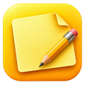

Enko Notes
Tus notas y tableros, siempre contigo.
Aplicación para Windows y Android con notas al estilo de Google Keep (carpetas anidadas, etiquetas, colores, listas, imágenes, archivos y enlaces con vista previa) y tableros al estilo de Trello (columnas, tarjetas con fechas, repetición y avisos, calendario y búsqueda en todo).
Local primero, copia en tu Drive si quieres. Todo funciona sin conexión y sin cuenta: tus datos se guardan en tu dispositivo. Si lo activas, la sincronización entre tus dispositivos usa una carpeta normal llamada Enko Notes en tu Google Drive; la aplicación solo accede a esa carpeta, no al resto de tu Drive.
Qué incluye
- Notas con formato, listas de tareas, colores, fijadas y archivo; carpetas y etiquetas.
- Tableros con columnas y tarjetas, fechas de vencimiento, repetición, avisos y calendario.
- Búsqueda en notas y tarjetas, adjuntos por contenido y vistas previas de enlaces.
- Copias de seguridad automáticas, exportación e importación (ZIP con Markdown).
- Recibir texto, enlaces, imágenes y archivos compartidos desde otras apps de Android.
- Sincronización opcional entre Windows y Android mediante Google Drive.
Privacidad y condiciones
No hay servidor del desarrollador que reciba tus notas, ni publicidad, ni analítica. Consulta cómo se tratan tus datos y qué ocurre con Google Drive en la política de privacidad y las condiciones del servicio.
Icono de la aplicación
El mismo símbolo que identifica la aplicación, disponible para la configuración de Google y materiales del proyecto.
PNG · 120 × 120PNG · 512 × 512